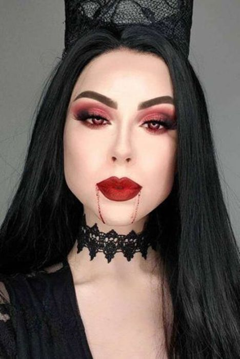
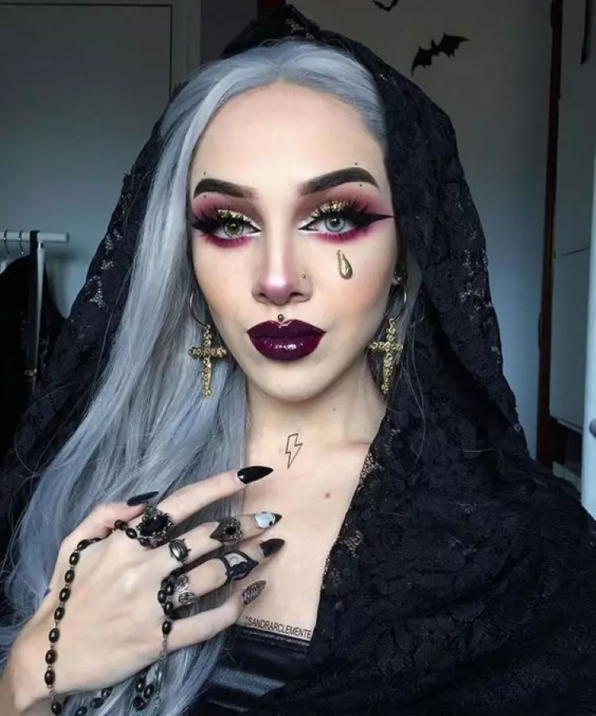
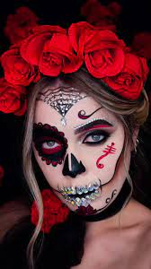

Brilhe no Escuro
No Halloween, a maquiagem vai além da beleza — ela se torna arte! As sombras em tons escuros, metálicos e vibrantes dão vida a visuais misteriosos, glamourosos e até assustadores. Explore combinações de preto, vermelho, roxo e prateado para criar um olhar hipnotizante.
Inspirações de Sombras

Olhar Vampiresco

Olhar Dourado das Trevas

Caveira Glam
Dicas para Arrasar
- Use primer de olhos para fixar a sombra por mais tempo.
- Misture tons de vermelho e preto para um efeito dramático.
- Finalize com delineador e cílios postiços intensos.
- Adicione um toque de glitter ou pigmento metálico.